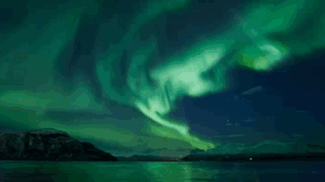

Info
Hey this is Collin K0NNK from Elkader, Iowa QSL!
I love all things radio and tech.
I am active on Allstar, Echolink, DMR, YSF, HH, HOIP, and a little bit of HF and FM!
Feel free to connect up to my Allstar node 57686 linked to Echolink and HOIP more info in *KAS System*!
Feel free to check out my *blog*, *about me*, and other parts of this page for more information!